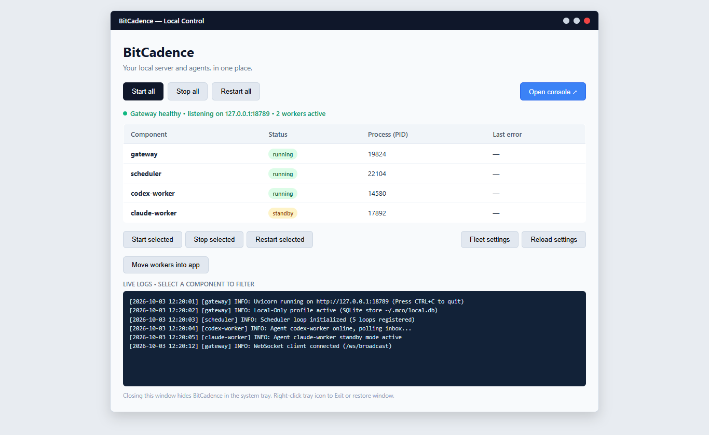

Desktop Manager, Installer & System Tray
Goal
Install, launch, operate, update, and troubleshoot the native BitCadence Windows Desktop Manager (scripts/desktop.pyw), system tray icon, one-click installer, and background process supervisor without keeping raw terminal windows open.
Architecture Overview
BitCadence provides a window-free, supervisor-managed desktop experience on Windows. It bridges command-line daemons and the browser Control Panel into a single executable workflow:
+-------------------------------------+
| Desktop Shortcut |
| ("BitCadence.lnk") |
+-------------------------------------+
|
v
+-------------------------------------+
| pythonw.exe |
| (Subsystem: Windows GUI) |
| No black CMD console window! |
+-------------------------------------+
|
v
+-------------------------------------+
| scripts/desktop.pyw |
| --start-all --minimized |
+-------------------------------------+
|
+------------------------+------------------------+
| |
v v
+---------------------------+ +---------------------------+
| Tkinter Control UI | | Pystray Notification |
| ("Local Control") | | System Tray Icon |
+---------------------------+ +---------------------------+
| |
+------------------------+------------------------+
|
v
+-------------------------------------+
| StackSupervisor Controller |
| Windows Job Object Isolation |
+-------------------------------------+
| | |
+----------------+ | +----------------+
| | |
v v v
+------------------+ +------------------+ +------------------+
| Gateway Server | | Scheduler Daemon | | Worker Wakers |
| mco serve | | mco schedule run | | (fleet.toml) |
+------------------+ +------------------+ +------------------+
Step-by-Step Instructions
1. Installation: One-Click Installer & Desktop Shortcut
BitCadence offers two installation methods on Windows:
Method A: The One-Click Installer (install.bat / scripts/install.ps1)
For new users and end-user workstations:
- Double-click
install.batin the repository root (or runpowershell -ExecutionPolicy Bypass -File scripts\install.ps1). - The installer automatically:
- Locates or downloads Python 3.9+.
- Creates a private virtual environment (
.venv). - Generates a local access token (
mco_tok_...) and configuration (~/.mco/.env). - Adds
mcoto your UserPATH(%LOCALAPPDATA%\BitCadence\bin). - Creates a BitCadence shortcut on your Desktop pointing to the launcher.
Method B: Desktop Component Setup (scripts/install_desktop.ps1)
For existing source checkouts or developers:
powershell -ExecutionPolicy Bypass -File scripts\install_desktop.ps1 -Python .\.venv\Scripts\python.exe
This script:
- Installs desktop UI dependencies (
pystray,Pillow) into.codex/desktopdeps. - Generates the official multi-resolution icon (
.codex/bitcadence.ico). - Verifies that
pythonw.exeexists in your Python directory. - Generates standard Windows shortcuts (
BitCadence.lnk) in both your Desktop and Start Menu Programs folders pointing to:Target: <path-to>\pythonw.exe "<repo-root>\scripts\desktop.pyw" Start In: <repo-root>
2. First Launch & Guided Startup
Double-click the BitCadence icon on your Desktop or Start menu.

What Happens on First Launch:
- Window-Free Launch: Launched via
pythonw.exe, so no black command prompt window flashes or remains on your screen. - Single-Instance Guard: If BitCadence is already running, launching the shortcut again does not start a duplicate server. Instead, it signals the existing instance via
~/.mco/desktop/show-windowand brings the existing window to the front. - Automatic Component Discovery: The app inspects your system to identify running gateways, schedulers, and workers.
- Clicking "Start All":
- Starts the Gateway API server (
http://127.0.0.1:18789). - Waits for the
/readyzhealth probe to pass (up to 30 seconds). - Starts the background Scheduler daemon.
- Starts all configured workers in
~/.mco/fleet.tomlwhose mode is set towakerorpoll.
- Starts the Gateway API server (
3. What Starts Automatically
When you click Start all (or launch with --start-all), the supervisor starts the complete local stack in strict topological order:
| Component | Command Invoked | Purpose |
|---|---|---|
| Gateway Server | python.exe -m mco.cli serve --host 127.0.0.1 --port 18789 |
Local API server, SQLite database interface, SSE event bus, and Web Console backend. |
| Scheduler | python.exe -m mco.cli schedule run |
Evaluates cron loops and interval automation declared in ~/.mco/schedules.yaml. |
| Fleet Workers | Commands configured in ~/.mco/fleet.toml |
Starts event wakers or polling processes for each active agent (e.g., codex-beast, claude-cio). |
Process Guard (Windows Job Object): All child processes spawned by the supervisor are attached to a Windows Job Object configured with
JOB_OBJECT_LIMIT_KILL_ON_JOB_CLOSE. If the desktop supervisor terminates unexpectedly or crashes, the Windows kernel automatically terminates all child worker processes, preventing orphaned background zombies.
4. System Tray & Minimized Behavior
The Desktop Manager integrates with the Windows Notification Area (System Tray):
- Minimizing to Tray on Close (X): Clicking the X button in the window title bar does not terminate BitCadence. It withdraws the window into the notification tray, keeping all background agents and the gateway running uninterrupted.
- Starting Minimized at Boot: Running with the
--minimizedflag starts the application directly in the notification tray without ever flashing a GUI window:pythonw.exe scripts\desktop.pyw --start-all --minimized - System Tray Context Menu: Right-clicking the BitCadence tray icon provides:
- Open BitCadence: Restores the main Control window.
- Start all: Starts all configured stack components.
- Stop all: Gracefully stops workers, scheduler, and gateway.
- Open console: Launches your default web browser directly to
http://127.0.0.1:18789/console. - Exit: Gracefully terminates all supervisor-owned child processes and exits the application completely.
5. Configuring Autostart on Sign-in
To have BitCadence automatically start in the tray whenever you log in to Windows:
powershell -ExecutionPolicy Bypass -File scripts\desktop_autostart.ps1 -Pythonw "C:\path\to\.venv\Scripts\pythonw.exe"
This places a shortcut in %APPDATA%\Microsoft\Windows\Start Menu\Programs\Startup configured with --start-all --minimized.
To remove autostart:
powershell -ExecutionPolicy Bypass -File scripts\desktop_autostart.ps1 -Remove
6. Where the Logs Live
BitCadence organizes logs cleanly on disk:
| Log File | Path | What It Contains |
|---|---|---|
| Desktop Supervisor | ~/.mco/desktop/logs/desktop.log |
Supervisor lifecycle events, start/stop requests, and process health checks. |
| Component Logs | ~/.mco/desktop/logs/<component>.log |
Combined stdout/stderr for each individual managed component (gateway.log, scheduler.log, <instance>.log). |
| Standalone Gateway | ~/.mco/logs/gateway.log |
Gateway server logs when run outside the desktop supervisor. |
| Individual Agent Logs | ~/.mco/logs/<instance>.log |
Output generated by worker CLI executors. |
Filtering Logs in the GUI:
In the Desktop Control window:
- Click any row in the Component table (e.g.,
gatewayorclaude-cio). - The bottom log viewer instantly filters to show the last 100 lines of output for that selected component.
- Deselecting rows returns to the unified log stream.
Selection now permits one component. Start/Stop/Restart selected disable without a selection or while busy. External workers retain their original logs; an empty app log is not evidence of no external work. Readiness alone does not prove worker delivery.
Apply fleet changes… previews added/changed/removed names before reconciliation. Cancel changes nothing. Applying can stop changed/removed components and disable matching tasks; added definitions are not automatically started. Move workers into app… previews states/PIDs and enabled tasks before the existing disable/stop/restart handoff. Do this between jobs with appropriate authorization; the preview is not a live lease inspection. Stop all can stop exact matching external components and disable their tasks; Exit stops only app-owned children.
7. Updating BitCadence
Updating Source Installations:
The setup script includes automated upstream update checks:
- Open PowerShell in the BitCadence directory:
git pull --ff-only origin main - In Desktop Control, review Apply fleet changes… for configuration changes. Restart all stops then starts components, potentially interrupting work; verify current ownership and choose an appropriate between-job window before using it. Merely updating source/docs does not update already running processes.
Updating Package Installations:
If installed via pip:
pip install --upgrade "bitcadence[desktop]"
8. Uninstalling
To cleanly remove BitCadence from your computer:
- Exit the Desktop Manager: Right-click the system tray icon and select Exit (or run
python -m mco.desktop.app --quit). - Remove Autostart:
powershell -ExecutionPolicy Bypass -File scripts\desktop_autostart.ps1 -Remove - Remove Shortcuts: Delete
BitCadence.lnkfrom your Desktop and Start Menu Programs folders. - Preserve configuration and evidence: Keep
~/.mcounless intentionally retiring its jobs, schedules, credentials and history under a separate data-removal plan. Removing the app/shortcut does not require erasing this directory. - Delete Repository / Environment: Delete the BitCadence installation folder.
Operating System Compatibility: Linux & macOS Status
| Platform | Desktop Manager GUI (desktop.pyw) |
Background Service Deployment | Browser Web Console |
|---|---|---|---|
| Windows 10/11 | Full Support (Native Tkinter + Pystray + Job Objects) | Task Scheduler (schtasks) |
Supported |
| Linux (Ubuntu/Debian/RHEL) | Not Supported (CLI returns error) | Native systemd user units |
Supported |
| macOS (Apple Silicon & Intel) | Not Supported (CLI returns error) | Native launchd user plists |
Supported |
Linux Alternative:
On Linux, the Desktop GUI is deliberately disabled (if os.name != "nt": raise SystemExit("The desktop manager currently supports Windows.")). Instead, Linux operators use native systemd user units:
mco service install
systemctl --user enable --now bitcadence-gateway
systemctl --user enable --now bitcadence-scheduler
Access the UI via browser at http://127.0.0.1:18789/console.
macOS Alternative:
On macOS, background persistence is managed via native launchd:
mco service install
launchctl load ~/Library/LaunchAgents/com.bitcadence.gateway.plist
Access the UI via browser at http://127.0.0.1:18789/console.
If It Goes Wrong
1. "SupervisorAlreadyRunning" Error on Startup
- Cause: Another instance of
desktop.pywis already running or held open in the system tray. - Fix: Check your system tray (notification area overflow arrow). If present, right-click and choose Open BitCadence. If stuck, terminate lingering Python processes:
python -m mco.desktop.app --quit
2. "Pillow or pystray not found"
- Cause: Python environment was installed without desktop dependencies.
- Fix: Run the dependency installer:
powershell -ExecutionPolicy Bypass -File scripts\install_desktop.ps1
3. "Gateway failed readiness probe"
- Cause: Port 18789 is occupied by an orphaned process or external server.
- Fix: Check what process is listening on port 18789:
Identify the owning component before stopping anything. The GUI has no port editor; use the supported launcherGet-NetTCPConnection -LocalPort 18789 -ErrorAction SilentlyContinue | Select-Object OwningProcess--portconfiguration if a different local port is intended. Do not kill unrelated Python processes as a readiness repair.